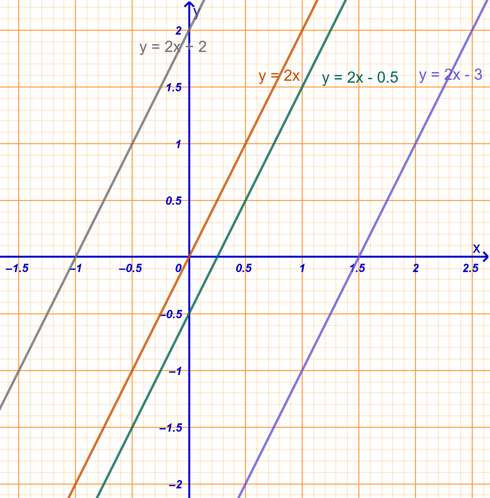
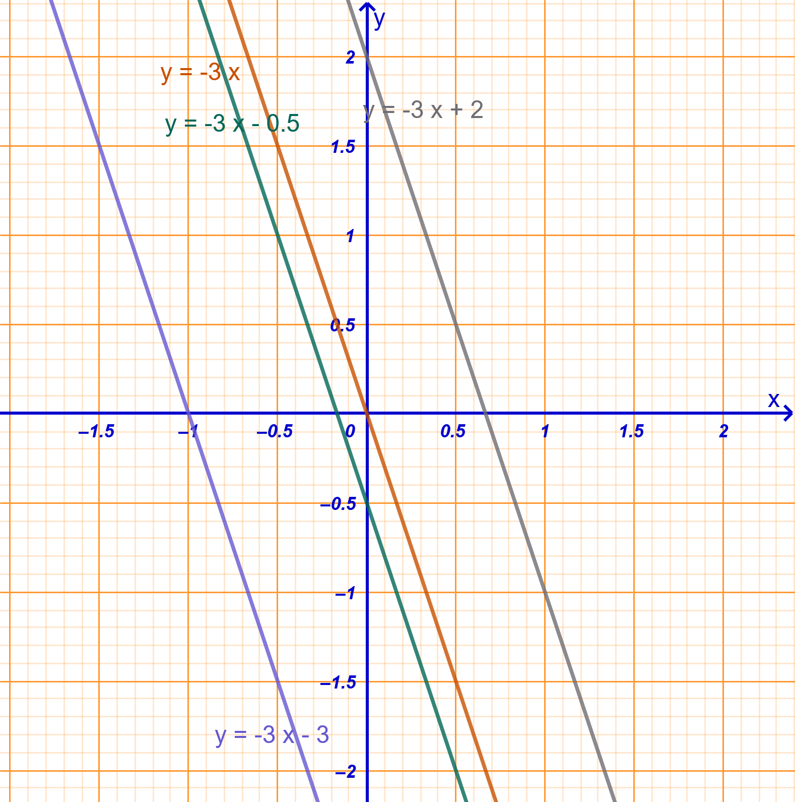
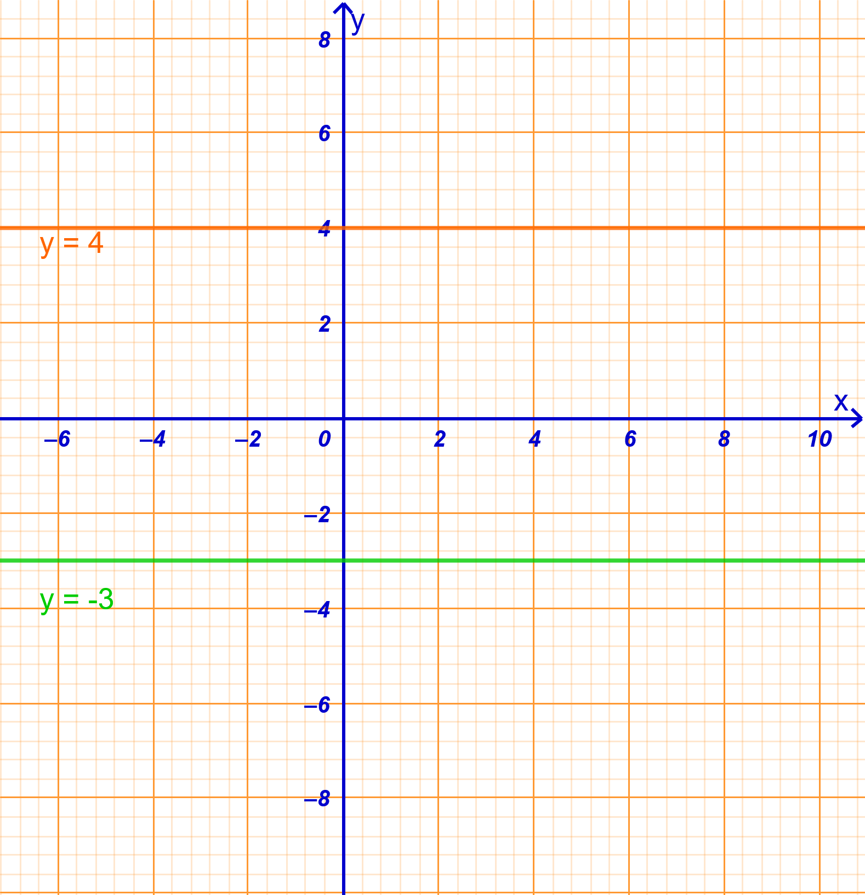
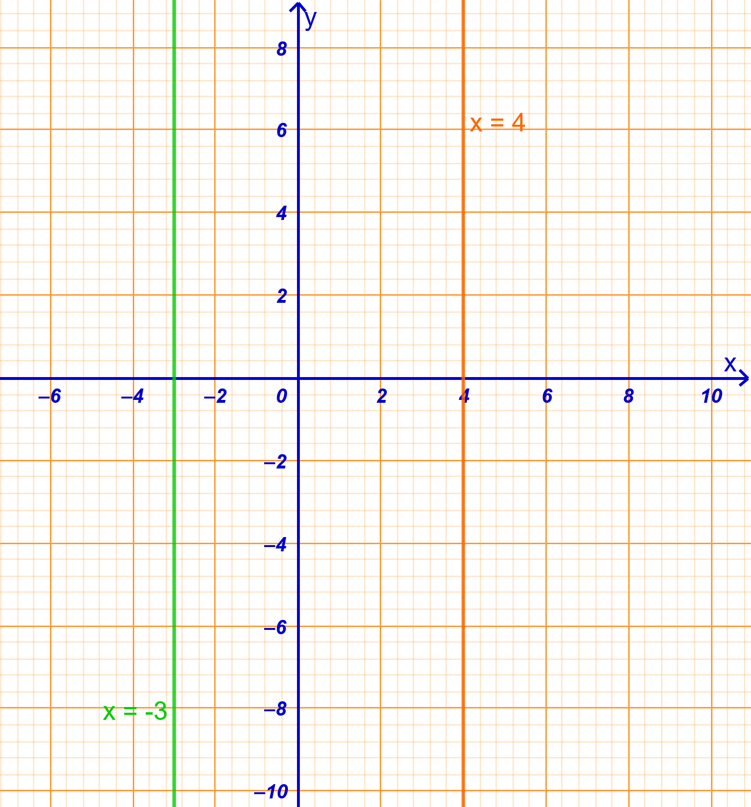
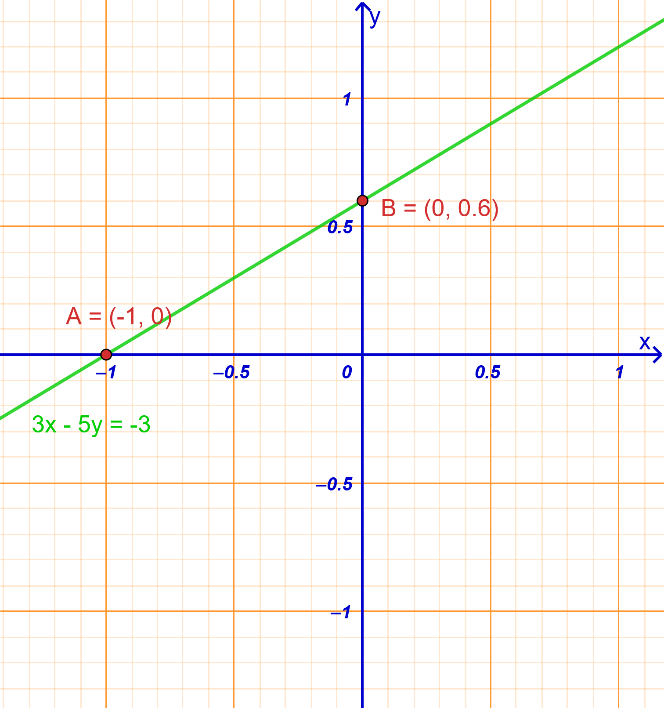
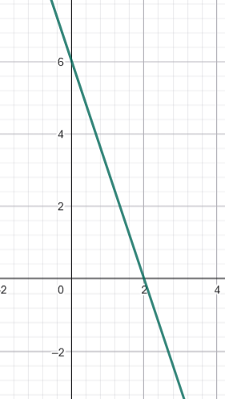
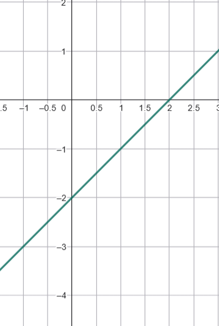
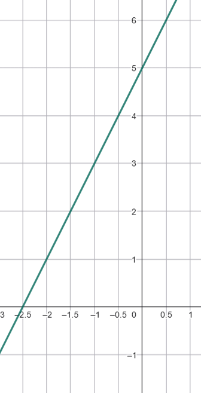

1 Η συνάρτηση της μορφής \(y = \alpha x+β\).
1.1 Η ευθεία με εξίσωση y = αx + β
Αφού είδαμε τη συνάρτηση \(y = \alpha x\), η οποία εκφράζει τα ανάλογα ποσά, ήρθε η ώρα να προχωρήσουμε στη γενικότερη μορφή της, τη γραμμική συνάρτηση \(y = \alpha x + \beta\).
Θεωρία και Ορισμοί
Ορισμός: Η συνάρτηση της μορφής \(y = \alpha x + \beta\), όπου \(\alpha\) και \(\beta\) είναι πραγματικοί αριθμοί, ονομάζεται γραμμική συνάρτηση.
Γραφική Παράσταση: Η γεωμετρική απεικόνιση της συνάρτησης αυτής στο επίπεδο των αξόνων είναι πάντοτε μια ευθεία γραμμή.
Συντελεστές: Ο αριθμός \(\alpha\) καθορίζει την κλίση της ευθείας, ενώ ο αριθμός \(\beta\) (σταθερός όρος) καθορίζει το σημείο στο οποίο η ευθεία τέμνει τον άξονα των τεταγμένων (\(y'y\)).
Ιδιότητες
- Διέλευση από την αρχή των αξόνων: Αν \(\beta = 0\), η εξίσωση γίνεται \(y = \alpha x\) και η ευθεία διέρχεται πάντοτε από το σημείο \(O(0,0)\).
- Μη διέλευση: Αν \(\beta \neq 0\), η ευθεία δεν διέρχεται από την αρχή των αξόνων.
- Προσδιορισμός ευθείας: Για να σχεδιάσουμε τη γραφική παράσταση, αρκεί να προσδιορίσουμε δύο σημεία της, συνήθως τις τομές με τους άξονες.
Αλλάξτε την τιμή των δρομέων α και β (κλίκ και σύρτε)
- Τι συμβαίνει όταν μεταβάλεται το α;
- Τι συμβαίνει όταν μεταβάλλεται το β;
Εξετάστε αν ισχύουν όσα είπαμε παραπάνω για τα α και β.
Παραδείγματα
- \(y = 2x + 1\): Ευθεία που δεν περνά από το \((0,0)\).
- \(y = 3x - 2\): Γραμμική συνάρτηση με κλίση 3.
- \(y = 25x + 500\): Συνάρτηση αμοιβής (π.χ. σταθερό ποσό συν προμήθεια).
- \(y = 65000 - 5x\): Συνάρτηση με αρνητική κλίση (φθίνουσα).
- \(y = 1,50x + 40\): Συνάρτηση κόστους ΔΕΗ (πάγιο συν κατανάλωση).
Ασκήσεις
- Σχεδιάστε τη γραφική παράσταση της \(y = x + 3\).
- Βρείτε την τιμή του \(y\) για \(x = 2\) στην εξίσωση \(y = 3x + 4\) (εφαρμογή τύπου).
- Αν \(f(x) = x + 5\) και \(f(a) = 87\), βρείτε τη σταθερά \(a\).
- Σχεδιάστε την ευθεία \(y = -x + 3\).
- Προσδιορίστε αν η ευθεία \(y = 5x-2\) περνά από την αρχή των αξόνων.
- Υπολογίστε την τιμή του \(x = 7\) στη συνάρτηση \(y = 2x - 4\).
- Βρείτε την κλίση \(\alpha\) στην εξίσωση \(y = 50x-20\).
- Προσδιορίστε το \(y\) στην \(y = -2x - 1\) αν \(x = 1,3\).
- Σχεδιάστε σε κοινό σύστημα τις \(y = 2x-1\) , \(y=2x+3\) και \(y = 2x\). Τι παρατηρείτε:
- Γράψτε τη συνάρτηση που συνδέει την πλευρά \(x\) τετραγώνου με την περίμετρο \(y\).
1.2 Η εξίσωση της μορφής αx + βy = γ
Θεωρία και Ορισμοί
Ορισμός: Η έκφραση \(ax + βy = γ\) ονομάζεται γραμμική εξίσωση (ή εξίσωση πρώτου βαθμού) με δύο αγνώστους, \(x\) και \(y\).
Λύση: Λύση της εξίσωσης ονομάζεται κάθε διατεταγμένο ζεύγος πραγματικών αριθμών \((κ,λ )\) που την επαληθεύει.
Συντελεστές: Τα \(a, β, γ\) είναι πραγματικοί αριθμοί. Για να παριστάνει ευθεία, πρέπει τουλάχιστον ένα από τα \(a, β\) να είναι διάφορο του μηδενός.
Σχέση με την \(y = \alpha x\): Η γραφική παράσταση της \(y = \alpha x + \beta\) είναι μια ευθεία παράλληλη προς την ευθεία \(y = \alpha x\), μετατοπισμένη κατά \(\beta\) μονάδες στον άξονα \(y'y\).


Παράλληλες Ευθείες: Δύο ευθείες είναι παράλληλες μεταξύ τους όταν έχουν την ίδια κλίση \(\alpha\).
Ειδικές Περιπτώσεις:
- Όταν \(\alpha = 0\), η συνάρτηση γίνεται \(y = \beta\) και είναι μια σταθερή συνάρτηση (οριζόντια ευθεία παράλληλη στον άξονα \(x'x\)).

- Η εξίσωση \(x = \kappa\) παριστάνει μια κατακόρυφη ευθεία παράλληλη στον άξονα \(y'y\), αλλά αυτή δεν ορίζει συνάρτηση.

- Όταν \(\alpha = 0\), η συνάρτηση γίνεται \(y = \beta\) και είναι μια σταθερή συνάρτηση (οριζόντια ευθεία παράλληλη στον άξονα \(x'x\)).
Ιδιότητες
Άπειρες Λύσεις: Μια εξίσωση με δύο αγνώστους έχει άπειρα διατεταγμένα ζεύγη ως λύσεις, τα οποία γεωμετρικά αντιστοιχούν στα σημεία μιας ευθείας.
Μετασχηματισμός: Η εξίσωση μπορεί να λυθεί ως προς \(y\) (αν \(β \neq 0\)) παίρνοντας τη μορφή \(y = \alpha'x + \beta'\), που είναι η κλασική μορφή της ευθείας.
Ισοδυναμία: Αν πολλαπλασιάσουμε ή διαιρέσουμε όλα τα μέλη με τον ίδιο αριθμό (μη μηδενικό), προκύπτει ισοδύναμη εξίσωση.
Σχέση με τη μορφή \(y = \alpha x + \beta\)
Για να συνδέσουμε τις δύο μορφές, αρκεί να λύσουμε τη γενική εξίσωση ως προς \(y\) (εφόσον \(\beta \neq 0\)):
Απομόνωση του όρου \(y\): Μεταφέρουμε το \(\alpha x\) στο δεύτερο μέλος αλλάζοντας το πρόσημό του: \(\beta y = -\alpha x + \gamma\).
Διαίρεση με το \(\beta\): Διαιρούμε όλα τα μέλη με τον συντελεστή του \(y\): \(y = -\dfrac{\alpha}{\beta}x + \dfrac{\gamma}{\beta}\).
Με αυτή τη μετατροπή, η κλίση της ευθείας είναι το πηλίκο \(-\dfrac{\alpha}{\beta}\) .
Παραδείγματα
- \(3x - 2y = 7\): Τυπική γραμμική εξίσωση.
- \(5x + y = -2\): Εξίσωση με \(β = 1\).
- \(4x + 3y = 5\): Γραμμική εξίσωση δύο αγνώστων.
- \(4x - y = 4\): . α=4 και β=-1
- \(2x + 3y = -8\): .γ=-8
Ασκήσεις
- Λύστε την εξίσωση \(2x - y = -3\) ως προς \(y\).
- Βρείτε τρία διατεταγμένα ζεύγη που επαληθεύουν την \(x + y = 5\).
- Ελέγξτε αν το ζεύγος \((1, -2)\) είναι λύση της \(3x - 2y = 7\).
- Απλοποιήστε την εξίσωση \(6x - 4y = 10\) διαιρώντας με το 2.
- Μεταφέρετε τους όρους ώστε η \(y - 3x = 12\) να πάρει τη μορφή \(ax + βy = γ\).
- Βρείτε την τιμή του \(y\) στην \(4x - y = 5\) αν \(x = 0,5\).
- Σχηματίστε εξίσωση αν το άθροισμα δύο αριθμών είναι 100.
- Βρείτε το \(a\) αν το ζεύγος \((2, -3)\) επαληθεύει την \(ax + y = 3\).
- Λύστε την \(x + 2y = -1\) ως προς \(x\).
1.3 Σημεία τομής της ευθείας αx + βy = γ με τους άξονες
Θεωρία και Ορισμοί
Τομή με τον άξονα \(x'x\): Είναι το σημείο της ευθείας που έχει τεταγμένη \(y = 0\). Για να το βρούμε, αντικαθιστούμε \(y = 0\) στην εξίσωση και λύνουμε ως προς \(x\).
Τομή με τον άξονα \(y'y\): Είναι το σημείο της ευθείας που έχει τετμημένη \(x = 0\). Για να το βρούμε, αντικαθιστούμε \(x = 0\) στην εξίσωση και λύνουμε ως προς \(y\).

Ιδιότητες
Συντεταγμένες: Τα σημεία τομής έχουν πάντα τη μορφή \((x, 0)\) για τον άξονα των τετμημένων και \((0, y)\) για τον άξονα των τεταγμένων.
Ελάχιστα Σημεία: Αυτά τα δύο σημεία τομής με τους άξονες είναι τα πλέον κατάλληλα για τον γρήγορο σχεδιασμό οποιασδήποτε ευθείας που δεν περνά από την αρχή των αξόνων.
Αρχή Αξόνων: Αν ο σταθερός όρος \(\gamma\) είναι μηδέν, τότε και οι δύο τομές συμπίπτουν στο σημείο \((0,0)\).
Παραδείγματα
- Για την \(y = 2x - 4\): Για \(y=0 \to x=2\), σημείο \((2,0)\). Για \(x=0 \to y=-4\), σημείο \((0,-4)\).
- Για την \(y = 3x - 12\): Τομές στα σημεία \((4,0)\) και \((0,-12)\).
- Για την \(x + y = 2\): Τομές στα \((2,0)\) και \((0,2)\).
- Για την \(y = 5x\): Τομή και με τους δύο άξονες στο \((0,0)\).
- Για την \(y = 20x + 30\): Τομή με τον \(y'y\) στο \((0,30)\).
Ασκήσεις
- Βρείτε τα σημεία τομής της ευθείας \(3x - y = 6\) με τους άξονες.
- Προσδιορίστε την τεταγμένη του σημείου τομής της \(y = 3x - 2\) με τον \(y'y\).
- Βρείτε το σημείο τομής της ευθείας \(x + 2y = 10\) με τον άξονα \(x'x\).
- Ποιο είναι το σημείο τομής της \(y = ax + \beta\) με τον \(y'y\) όταν \(x=0\);.
- Βρείτε τις τομές της ευθείας \(\dfrac{x}{3} + \dfrac{y}{4} = 1\) με τους άξονες.
- Προσδιορίστε αν το σημείο \((0,-2)\) είναι τομή της \(y = 2x - 2\) με τον \(y'y\).
- Βρείτε την τετμημένη του σημείου τομής της \(5x + 3y = 15\) με τον \(x'x\).
- Σχεδιάστε την ευθεία \(y = -2x + 4\) χρησιμοποιώντας μόνο τα σημεία τομής.
- Βρείτε τις συντεταγμένες των σημείων τομής της ευθείας \(y = 10\) (οριζόντια) με τους άξονες.
- Προσδιορίστε τα σημεία τομής της ευθείας που συνδέει τα \((3,0)\) και \((0,4)\) με τους άξονες.
1.4 ….. Ασκήσεων συνέχεια
Άσκηση 1: Εύρεση Σημείων Τομής Δίνεται η ευθεία \(y = 2x - 4\). Να βρείτε τα σημεία στα οποία η ευθεία τέμνει τους άξονες \(x'x\) και \(y'y\) και στη συνέχεια να τη σχεδιάσετε.
Άσκηση 2: Υπολογισμός Κλίσης Να βρείτε την κλίση της ευθείας που διέρχεται από τα σημεία \(A(1, 1)\) και \(B(2, 3)\).
Άσκηση 3: Εύρεση Εξίσωσης από Σημεία Να βρείτε την εξίσωση της ευθείας που περνά από τα σημεία \((0, 3)\) και \((1, 5)\).
Άσκηση 4: Έλεγχος Σημείου Να εξετάσετε ποιό από τα παρακάτω σημεία ανήκουν στην γραφική παράσταση της συνάρτησης \(y = 2x - 1\).
| Σημείο Α | Σημείο Β | Σημείο Γ | Σημείο Δ |
|---|---|---|---|
| (-1,1) | (3,6) | (4,7) | (-2,-5) |
Άσκηση 5: Πρόβλημα Καθημερινότητας (Ταξί) Για τη χρήση ενός ταξί πληρώνουμε \(1,8\) € για τη «σημαία» και \(0,8\) € για κάθε χιλιόμετρο διαδρομής.
- Να βρείτε τη συνάρτηση που εκφράζει το συνολικό ποσό \(y\) για μια διαδρομή \(x\) χιλιομέτρων.
- Να βρείτε πόσα χιλιόμετρα θα κάνει κάποιος με 16 €.
- Πόσα χρήματα θα χρειαστεί κάποιος για να κάνει 22 χιλιόμετρα.
Άσκηση 6: Παράλληλες Ευθείες Ποια από τις παρακάτω ευθείες είναι παράλληλη στην \(y = 3x\);
α) \(y = x + 3\)
β) \(y = 3x - 7\)
γ) \(y = -3x + 5\)
Γραφική Παράσταση: Να σχεδιάσετε στο ίδιο σύστημα αξόνων τις ευθείες \(y = \dfrac{1}{4}x\), \(y = \dfrac{1}{4}x + 3\) και \(y = \dfrac{1}{4}x - 2\).
Σημεία Τομής με Άξονες: Να βρείτε τα σημεία στα οποία η ευθεία \(y = 2x - 4\) τέμνει τους άξονες \(x'x\) και \(y'y\).
Εύρεση Παραμέτρου: Η γραφική παράσταση της ευθείας \(y = -2x + \beta\) διέρχεται από το σημείο \(A(-2, 6)\). Να βρείτε την τιμή του \(\beta\).
Τηλεφωνική Χρέωση: Μια εταιρεία χρεώνει πάγιο \(15\) € τον μήνα και \(3\) σεντ (\(0,03\) €) ανά λεπτό ομιλίας. Βρείτε τον τύπο της μηνιαίας χρέωσης.
Υπολογισμός Κλίσης: Να βρείτε την κλίση της ευθείας που δίνεται από την εξίσωση \(2y = 4x - 1\).
Κόστος Επίσκεψης: Μια σχολική εκδρομή σε μουσείο κοστίζει \(8,50\) € ανά μαθητή για την είσοδο και \(50\) € συνολικά για το λεωφορείο. Εκφράστε το συνολικό κόστος \(y\) ως συνάρτηση του αριθμού των μαθητών \(x\).
Ειδικές Μορφές: Να βρείτε την εξίσωση της ευθείας που διέρχεται από το σημείο \((-2, 4)\) και είναι κάθετη στον άξονα \(y'y\).
Να αντιστοιχίσετε τις ευθείες με τα γραφήματα
| Ευθείες | Γραφήματα |
|---|---|
| y=-3x+6 |  |
| y=2x-5 |  |
| y=x-2 |  |
- Σχεδιάστε την ευθεία \(2x+4y=-1\)
- Βρείτε την κλίση της ευθείας \(5x-3y=4\)
- Βρείτε που τέμνει τους άξονες η ευθεία \(2x-6y=-5\).
- Για την ευθεία \(-x+2y=-4\) να επιλέξετε την σωστή απάντηση από τον παρακάτω πίνακα
| Α | Β | Γ | |
|---|---|---|---|
| Έχει κλίση | 3 | \(\frac{1}{2}\) | -4 |
| Τέμνει τον άξονα x’x | (4,0) | (-2,0) | (3,-3) |
| Τέμνει τον άξονα y’y | (0,-2) | (-2,0) | (-2,2) |
ΚΑΛΗ ΜΕΛΕΤΗ !